Års
Grobkörniger, rötlicher Granit
Höhe ü. d. Erdboden: 180 cm
Größte Breite: 77 cm
Größte Dicke: 40 cm
Runenhöhe: zw. 14 - 19,4 cm
Runeninschrift :
Asser setzte diesen Stein für seinen Herrn Valtoke. Der Stein verkündet, dass er lange hier stehen wird. Er soll Valtokes Erinnerung nennen.
35 - Års - Letztes Update 17.04.2025
Listennummer : DR 131 / DK NJy 71
| Navidaten: 56.80457 9.51445 oder: Kirkeplads 1, 9600 Aars |
Transliteration:
Seite A : ąsur : sati : stin : þąnsi : aft : ual:tuka : trutin : | : sin
Seite B : stin : kuask : hirsi : stąnta : ląki : saR : ual:tuka : | : uarþa : nafni
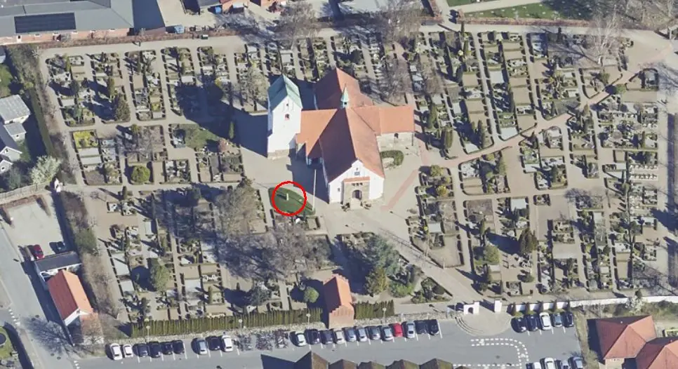
Das ist ein Luftfoto vom 20.04.2023 von Skråfoto - Lizenz: CC BY 4.0 - das die Kirche von Aars zeigt. Skråfoto ist eine Webanwendung, die von Klimadatastyrelsen weltweit kostenlos bereitgestellt wird. Die Aufnahmen werden seit 2017 alle zwei Jahre erneuert und neben einer Senkrechtaufnahme wird ein Schrägbild aus jeder Himmelsrichtung angeboten, das man über eine Adresssuche aufrufen kann. Den Standort des Runensteins habe ich rot eingekreist.
Der Runenstein fand sich um 1654 auf dem Kirchhof von Års - auf der Seite A liegend - mit der Seite B nach oben - schon ziemlich in die Erde eingesunken. Die Runen auf der Seite A wurden erst am 21./22. August 1838 durch Prof. P. G. Thorsen (*07.08.1811 - 06.05.1883, Bibliothekar, Runenforscher und Historiker - link-LIVES - Artikel: Levnedsbeskrivelser af de ved Københavns Universitets Firehundredaarsfest promoverede Doktorer, Illustreret Tidende 1882, Nr. 1235 - vom 27.05.1833 / Grabstein in Varde / Eheschließung in Varde am 19. August 1848)
 Fotografie
zw. 1863-1900 von
Fotograf Budtz Müller (*26.12.1837 -
30.12.1884) -
Det Kgl. Biblioteks billedsamling - Lizenz:
Public Domain
Fotografie
zw. 1863-1900 von
Fotograf Budtz Müller (*26.12.1837 -
30.12.1884) -
Det Kgl. Biblioteks billedsamling - Lizenz:
Public Domain
entdeckt, der den Stein bei seinem Forschungsaufenthalt vor Ort wenden und aufstellen ließ. Heute steht der Runenstein auf einem kleinen Hügel im Kirchhof von Års, links vom Kircheneingang. Bei meinen aktuellen Recherchen las ich eine Info vom 19.01.2022, wonach der Kirchengemeinderat in Års den Runenstein in die Kirche umsetzen lassen will, um ihn vor weiteren Umwelteinflüssen zu schützen. Man müsse sich nur noch auf einen Platz innerhalb der Kirche verständigen. Das sollte eigentlich zeitnah geschehen, aber am 13.02.2025 erhielt ich auf Anfrage die Nachricht, dass da noch nichts passiert ist.
Möglicherweise berichtet die Inschrift, die teilweise durch Halbkreise und Dreiecke verziert ist, über die Sklaverei. Er wird in die Zeit von 970 - 1020 n. Chr. datiert.
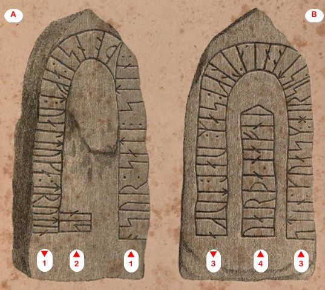
Quelle: urn:nbn:de:bvb:12-bsb10533946-9 - siehe unten - Lizenz: Public DomainDie Inschrift wird von links nach rechts in "Bustrophedon" gelesen. Von der rechten unteren Ecke der Vorderseite (Seite A) entlang der Kante - sog. Konturanordnung - und dazu von unten nach oben das einzelne Wort "sin", dann weiter von der unteren rechten Ecke der Rückseite (Seite B) entlang der Kante des Steins und schließlich das innere Textband von unten nach oben.
Die erste Erwähnung des Runensteins findet sich bei Johannes Meier (1660, Lehrer und Verfasser) in seinem Werk Liber monumentorum Danicorum, qvi monumenta Danica Olai Wormii partim emendat partim locupletat (pdf-Datei anhand eigener Fotos von mir erstellt) von 1654 (Blatt 8) - Königlichen Bibliothek in Kopenhagen - GKS 2371 kvart

Handschrift auf Papier - 47 Blatt, Blatt 1 und 47 unbeschrieben , aus dem 18. Jahrhundert, vormals Nr. 2794 in Niels Foss (*06.08.1670 - 17.03.1751) Sammlung - siehe S. 223 in "Bibliotheca Fossiana sive Catalogus librorum tam editorum quam manuscriptorum, ad philologiam et antiquitates, inprimis vero ad historiam patriæ pertinentium, maximam partem, nitidissime et, quam vocant, ligatura Anglica compactorum, quos, dum vixit, collegit Nicolaus Fossius de Juelland - 15.2.1752". Die Handschrift hat diese Maße: H: ca. 23,5 cm / B: ca. 19 cm / D: ca. 1,5 cm. Sie hat einen schönen Ledereinband mit Golddruck und verwendet stärkeres und helleres Papier als NKS 799. Die Jahreszahl von "1654" auf dem Titelblatt (S. 2) soll von Erich Christian Werlauff (*02.07.1781 - 05.06.1871, dänischer Historiker - link-LIVES)
 Bildquelle:
Wikipedia - Lizenz:
Public Domain
Bildquelle:
Wikipedia - Lizenz:
Public Domain
hinzugefügt worden sein. Text und Zeichnungen der Handschrift - auch im Zusammenspiel - sind ansehnlicher ausgeführt als in NKS 799.
In der Königlichen Bibliothek in Kopenhagen hat sich von Johannes Meier aber auch noch eine zweite Handschrift erhalten - NKS 799 kvart - Joh. Mejeri Monumenta Runica in Dania (pdf-Datei anhand eigener Fotos von mir erstellt). Deren Entstehungsdatum ist nicht bekannt. Der Runenstein findet sich auf Blatt 6.

NKS 799 kvart - Joh. Mejeri Monumenta Runica in Dania - Papier - 44 Blatt, Blatt 41-44 unbeschrieben, aus dem 18. Jahrhundert, vormals Nr. 70 in der Manuskript Sammlung von Peder Frederik Suhm (*18.10.1728 - 07.09.1798)
 Bildquelle:
Wikipedia - Lizenz:
Public Domain
Bildquelle:
Wikipedia - Lizenz:
Public Domain
Es handelt sich um
ein Büchlein mit einfachem Pappeinband, der
Buchrücken ist aus Leder und
verstärkte Ecken aus Leder weist der Buchdeckel auf. Es hat die
Maße: H: ca. 20
cm / B: ca. 17 cm / D: ca. 1,5 cm. Zu den einzelnen Zeichnungen im Büchlein
wurde ein einfacher Maßstab abgebildet.
Bei beiden Exemplaren
weist immer das rechte Blatt der Doppelseite in der oberen Ecke eine mit
Bleistift geschriebene Seitenzahl auf. Diese beiden Werke sind Abschriften von
früheren Werken, die die Zeit nicht überdauert haben.
Vielleicht sind sie in
Kopenhagen beim Großbrand von 1728
vernichtet worden, als neben zahlreichen privaten Beständen auch ca.
35.000 Bücher der Königlichen Bibliothek
in
Kopenhagen ein Raub der Flammen wurden!
Die
GKS 2371 kvart soll laut
Prof. Ludv. F. A. Wimmer
(*07.02.1839 -
29.04.1920, Philologe und Runenforscher
-
link-LIVES -
Politiets registerblade
-
Bestattungsprotokoll)
 Bildquelle:
Fotografie zw. 1877-1900 von Fotograf Hansen & Weller
-
Det Kgl. Biblioteks billedsamling - Lizenz:
Public Domain
Bildquelle:
Fotografie zw. 1877-1900 von Fotograf Hansen & Weller
-
Det Kgl. Biblioteks billedsamling - Lizenz:
Public Domain
und seinen Infos von Christian Walter Bruun (*10.12.1831 - 28.02.1906, Königlicher Oberbibliothekar - link-LIVES)
 Bildquelle: Fotografie
um 1880 von Fotograf J. Petersen
(*19.03.1829 -
01.02.1905) -
Det Kgl. Biblioteks billedsamling - Lizenz:
Public Domain
Bildquelle: Fotografie
um 1880 von Fotograf J. Petersen
(*19.03.1829 -
01.02.1905) -
Det Kgl. Biblioteks billedsamling - Lizenz:
Public Domain
von Niels Foss selbst abgeschrieben worden sein. Er hat die Texte laut den Studien von Erik Moltke (*04.04.1901 - 19.10.1984, Runologe, Historiker - link-LIVES)
 Bildquelle: Scan von Buchumschlag "Runerne i Danmark og ders
oprindelse" - Erik Moltke - 1976 - Lizenz:
CC-BY-SA
Bildquelle: Scan von Buchumschlag "Runerne i Danmark og ders
oprindelse" - Erik Moltke - 1976 - Lizenz:
CC-BY-SA
offenbar überarbeitet, verkürzt oder geändert und seine eigene
Orthografie eingebracht (z.B. alt: haffuer - bei Foss: haver / tyck/tyk /
kircke/kirke / oc/og u.a.).
In der
NKS 799 kvart hingegen steht auf der Seite 37 links unten "Niels
Knudsen Jerne" und seine Handschrift lässt vermuten, dass er die
gesamte Abschrift angefertigt hat. Er war offenbar ein professioneller Schreiber
und könnte mit dem Niels Knudsen identisch sein, der
1728 "Skriverkarl" auf dem Holmen (Stadtviertel von
Kopenhagen) war, also ein Mann der schnell viele Texte schreiben und liefern
konnte. Er wurde am 08.11.1737 zum "ekvipageskriver"
ernannt. Es scheint dass er sich entgegen
Niels Foss sehr eng an das Original gehalten hat.
Offenbar gab es laut dem Katalog über die
Büchersammlung
von
Peter
Hansen Resens (*17.06.1625 -
01.06.1688)
 Bildquelle:
Wikipedia - Lizenz:
Public Domain
Bildquelle:
Wikipedia - Lizenz:
Public Domain
"Bibliotheca
Regiæ Academiæ Hafniensi donata" Hafniæ (Kopenhagen) von
1685 - siehe
S. 273 - früher noch ein drittes Werk von
Johannes Meier mit dem Titel "Johan. Meieri
liber MS. de Monumentis Runicis sive antiqvis Danicics".
Quellen: Erik Moltke - Jon Skonvig og de andre runetegnere. Et bidrag til runologiens historie i Danmark og Norge I-II, 1956-58 Band 2 - Kapitel 13
Zwischen Montag, 26.09.2022, und Mittwoch, 28.09.2022, habe ich in der Königliche Bibliothek - Den sorte Diamant - in Kopenhagen - u.a. diese beiden alten Handschriften nach Online-Vorbestellung zur Ansicht erhalten. Ich durfte mir Aufzeichnungen machen, sie aber auch uneingeschränkt fotografieren. Ich habe sie mit dem Smartphone komplett als Doppelseiten fotografiert und daraus jeweils eine pdf-Datei erstellt. Vielleicht hat ja jemand Bedarf an diesen seltenen Ausgaben, die aufgrund ihres Alters keinem Urheberrrecht mehr unterliegen.
Peder Hansen Resen (*17.06.1625 - 01.06.1688, Jurist und Historiker) - Er hat mit dem von ihm über 20 Jahre gesammelten Material das großartige Werk "Atlas Danicus", bestehend aus letztlich 39 Folianten, geschaffen. Nur geringe Teile wurden aber zu seiner Lebzeit gedruckt. Die Bände wurden wenige Jahre nach seinem Tod 1692 an die Königliche Bibliothek Kopenhagen übergeben. Aufbewahrt wurden sie auf dem Dachboden der Trinitatis Kirche. Dort wurden sie fleißig studiert, abgeschrieben und zeitweise ausgeliehen. Leider wurde dann ein Großteil davon beim Kopenhagener Großbrand 1728 zerstört. Es hat sich neben einigen Originalseiten - siehe Arnamagnäanische Sammlung - AM 359 fol. / AM 360 fol. / AM 361 fol. und AM 362 fol. (digitalisiert) - nur eine (verkürzte) Abschrift und außerdem Kupferstiche von etwa 200 Städteansichten aus der Vogelperspektive erhalten. Originale dieser AM 359/360/361 fol sind über die Universität Kopenhagen - Institut for Nordiske Studier og Sprogvidenskab (NorS) - AM 359 fol / AM 360 fol / AM 360 fol (Karten) / AM 361 fol - in sw abrufbar. Eine zweite (verkürzte) Ausgabe war von Vincent Lerche (*04.04.1666 - 28.07.1742, Jurist, Architekt) beauftragt worden, diese wurde aber beim Brand von Schloss Christiansborg im Jahr 1794 vernichtet.
In der Königlichen Bibliothek in Kopenhagen wird seit 1803 in der Sammlung Uldall (186 folio) diese einzige verbliebene Ausgabe, die in den 1750er Jahren durch den Hofbaumeister Laurids de Thurah (*04.03.1706 - 06.09.1759)
 Bildquelle:
Wikimedia - Lizenz:
Public Domain
Bildquelle:
Wikimedia - Lizenz:
Public Domain
aus verstreuten Resten des Atlas Danicus in 7 Bänden rekonstruiert worden war, aufbewahrt:
Wie diesem Titel zu entnehmen ist, gehörte dieses Exemplar vormals Adam Gottlob Graf von Moltke (*10.11.1710 - 25.09.1792, Staatsmann, Diplomat)
 Bildquelle:
Wikimedia - Lizenz:
Public Domain
Bildquelle:
Wikimedia - Lizenz:
Public Domain
Nach dessen Tod erwarb Herman Treschow (*11.12.1739 - 02.05.1797, Professor für Theologie, Pfarrer) diese Ausgabe. Peter Uldall (*29.06.1743 - 11.11.1798, Jurist, Theologe)
 Bildquelle:
Wikimedia - Lizenz:
Public Domain
Bildquelle:
Wikimedia - Lizenz:
Public Domain
wiederum kaufte sie für 170 Rigsdaler (Rigsdaler zu 24 Skilling - damals 1 ½ Mark) nach dessen Ableben. Er hatte aber nicht lange Freude daran, denn er starb ein Jahr später an einem Schlaganfall. Sein Sohn, Justizrat W. A. Uldall, schenkte diese Ausgabe der Königlichen Bibliothek in Kopenhagen im Jahr 1803, wo dieses großartige Werk noch heute verwahrt wird (Ein Band hat übrigens die Größe H/B/D von 40 cm x 29,5 cm x 9,5 cm).
Im Atlas VI. ist auf der Seite 136 ein Eintrag zu dem Runenstein - nur zu der bis dahin bekannten Seite B - enthalten, die ich am 28.09.2022 vor Ort fotografieren durfte. Es findet sich hier allerdings keine Zeichnung des Runensteins. Vermutlich weil der Stein in Ole Worms (*13.05.1588 - 31.08.1654, Arzt, Universalgelehrter und der Begründer der Runologie) Werk "Danicorum Monumentorum Libri Sex, Hafniae, 1643" nicht erwähnt wird und ansonsten alle Zeichnungen bei Resen aus diesem Buch entnommen wurden.


Der lateinische Text aus dem Dänischen ins Deutsche übersetzt: "Aber um auf die Grafschaften zurückzukommen: In der Harde Aars, im Dorf Aars, gibt es zwei längliche Steine, die mit Runenbuchstaben beschrieben sind. Sie sind jedoch so beschädigt, dass man daraus keine Rückschlüsse ziehen kann."
Quelle: Peder Hansen Resens Atlas Danicus, VI, B: Viborg Bispedømme, i dansk Oversættelse ved Chr. Behrend udgivet af Gunnar Knudsen, 1933 (S. 114-116)
Die Zeichnung von Johannes Meier wurde im Jahr 1741 durch Erik Pontoppidan (Der Jüngere, dänisch-lutherischer Bischof, Theologe und Autor, *03.09.1698 - 20.12.1764)
 Bildquelle:
Wikipedia - Lizenz:
Public Domain
Bildquelle:
Wikipedia - Lizenz:
Public Domain
in seinem Werk "Marmora Danica selectiora. II", Seite 231, wiedergegeben.
Meier, Resen und auch Pontoppidan sprechen ja von zwei Steinen in Års. Er hier schreibt z.B. - übersetzt "...einen Stein beschriftet mit Runenzeichen, der Worm nicht bekannt wurde ... Dazu kommt noch ein weiterer von kleinerem Format und unkenntlich gemachter Inschrift..."
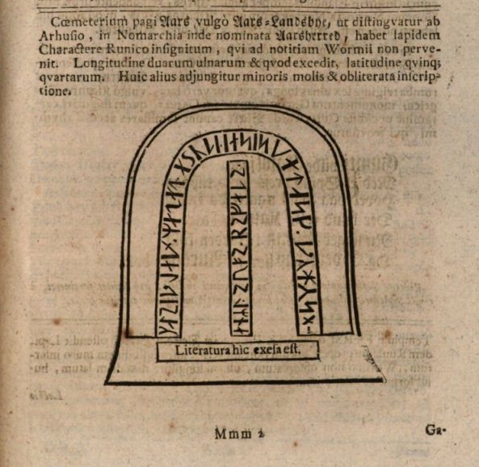
Einen Screenshot aus Pontoppidans Werk gebe ich hier wieder:
05.12.2022 - Abrufbar über Bayerische Staatsbibliothek - urn:nbn:de:bvb:12-bsb10328985-6 - Das Münchener DigitalisierungsZentrum bringt seit 1997 die reichhaltigen Bestände der Bayerischen Staatsbibliothek (BSB) ins Internet.
Diese zeichnerische Darstellung des Runensteins stammt aus dem Jahre 1776 von Søren Abildgaard (*18.02.1718 - 02.07.1791, Zeichner, Kupferstecher und Geologe)
 Bildquelle:
Jellingprojektet - Lizenz:
Public Domain -
http://www5.kb.dk/images/billed/2010/okt/billeder/object444188/da/
Bildquelle:
Jellingprojektet - Lizenz:
Public Domain -
http://www5.kb.dk/images/billed/2010/okt/billeder/object444188/da/
Das Originalblatt hat die Maße 22 x 33 cm.
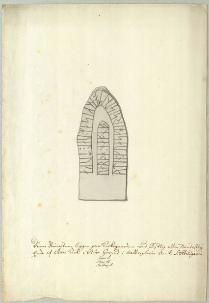
Bildquelle: Digitale Sammlung des Nationalmuseums Kopenhagen - Lizenz: CC BY-SA 4.0Darunter hat er folgenden Text geschrieben:
Übersetzung: "Dieser Runenstein befindet sich auf dem Friedhof am östlichen oder nordöstlichen Ende der Aars-Kirche in der Harde Aars im Landkreis Aalborg. S: Abildgaard."
Quelle: Søren Abildgaard (1718-1791) Fortiden på tegnebrættet - Poul Grinder-Hansen - S. 462 - Nr. 460
Von Rasmus Henrik Kruse (*07.08.1796 - 30.05.1877, Landschaftsmaler - link-LIVES - Heirat 21.12.1851)
 Bildquelle:
Det Kgl. Biblioteks billedsamling - Lizenz:
Public Domain
Bildquelle:
Det Kgl. Biblioteks billedsamling - Lizenz:
Public Domain
der zahlreiche Runensteine gezeichnet hat, haben sich im "Antikvarisk-Topografisk Arkiv" in Kopenhagen in seinen Aufzeichnungen mit dem Titel "Nørre Jyllands Mærkværdigheder i det 19. Aarh. Hs. Bd 1-2 (med) Tillæg 1-2" zwei Zeichnungen der beiden Runensteinseiten aus dem Jahr 1841 bewahrt (Band II, zw. S. 37ff, Zeichnung Nr. 12 und 13 / Tillæg I, S. 8). Daneben hat er auch handschriftliche Aufzeichnungen und einen Nachtrag erfasst. Dies sind die ersten Veröffentlichungen von Zeichnungen der beiden Seiten, da die Runeninschrift auf der Seite A ja erst 1838 durch die Aufstellung des vormals liegenden Runensteins entdeckt wurde.
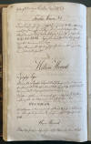 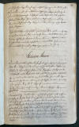 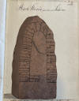 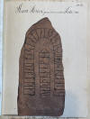 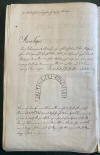


Dieses Werk wird heute im Nationalmuseum in Kopenhagen, Antikvarisk-Topografisk Arkiv, aufbewahrt. Dort durfte ich am Dienstag, 27.09.2022, zu Gast sein und die vier Bände in Händen halten und fotografieren.
Auch Prof. Jens Jacob Asmussen Worsaae (*14.03.1821 - 15.08.1885, dänischer Archäologe und Vorgeschichtler - link-LIVES - - Bestattungsprotokoll)
 Bildquelle: Fotografie
zw. 1863-1900 von Fotograf Budtz Müller
(*26.12.1837 -
30.12.1884) -
Det Kgl. Biblioteks billedsamling - Lizenz:
Public Domain
Bildquelle: Fotografie
zw. 1863-1900 von Fotograf Budtz Müller
(*26.12.1837 -
30.12.1884) -
Det Kgl. Biblioteks billedsamling - Lizenz:
Public Domain
hat zu dem Runenstein Aars in seinem Notesbog X., aus dem Jahr 1850, einen Eintrag auf der S. 91 vorgenommen.


In der Antikquarisk Tidsskrift 1843-45, S. 177-190, (herausgegeben von der "Det Kongelige Nordiske Oldskrift-Selskab, Kopenhagen" wird über den Runenstein von Finnur Magnusson (dänisch auch Finn Magnusen; * 27. August 1781 in Skálholt/Island - 24. Dezember 1847 in Kopenhagen, isländischer Philologe und Archivar - link-LIVES)
 Bildquelle:
Wikimedia - Lizenz:
Public Domain
Bildquelle:
Wikimedia - Lizenz:
Public Domain
berichtet. Angeschlossen sind diesem Bericht Skizzen beider Seiten, die an die o.a. Zeichnungen von Rasmus Henrik Kruse angelehnt sind. Sie werden am Buchende, als "Tab. V" bezeichnet, wiedergegeben.
05.12.2022 - urn:nbn:de:bvb:12-bsb10533946-9 - In digitalisierter Form über die Bayerische Staatsbibliothek München im Internet über diesen Link abrufen.
Prof. P. G. Thorsen (*07.08.1811 - 06.05.1883, Bibliothekar, Runenforscher und Historiker - link-LIVES - Artikel: Levnedsbeskrivelser af de ved Københavns Universitets Firehundredaarsfest promoverede Doktorer, Illustreret Tidende 1882, Nr. 1235 - vom 27.05.1833 / Grabstein in Varde / Eheschließung in Varde am 19. August 1848)
Fotografie
zw. 1863-1900 von
Fotograf Budtz Müller (*26.12.1837 -
30.12.1884) -
Det Kgl. Biblioteks billedsamling - Lizenz:
Public Domain
hat zwei Zeichnungen von Prof. Julius Magnus Petersen (*04.09.1827 - 31.01.1917, Archäologischer Zeichner und Restaurator - link-LIVES - Bestattungsprotokoll)
 Bildquelle: Fotografie
von 1903 von Fotograf Marius Christensen
(*24.06.1874 -
25.06.1907) -
Det Kgl. Biblioteks billedsamling - Lizenz:
Public Domain
Bildquelle: Fotografie
von 1903 von Fotograf Marius Christensen
(*24.06.1874 -
25.06.1907) -
Det Kgl. Biblioteks billedsamling - Lizenz:
Public Domain
in seinem Werk "De danske runemindesmærker beskrevne og forklarede, anden Afdeling, Jyllands Runemindesmærker, I. Afbildninger, 1879, Nr. 33" veröffentlicht - Google Scan. In seinem Band II, Text, von 1880, bringt er auf den S. 101-104 seine Forschungsergebnisse. Er war am 21./22. August 1838 vor Ort. Wie er hier schreibt, fand er zwei Steine vor. Einer - mit Runeninschrift - lag auf dem Kirchhof, ziemlich in die Erde eingesunken und ein anderer war im Waffenhaus aufgestellt, auf dem er aber keine Schriftzeichen feststellen konnte. Er ließ den eingesunkenen Stein wenden, worüber auch auf der anderen Seite eine Inschrift zum Vorschein kam. Wie sich herausstellte, gehörte sie zu der Inschrift auf der gegenüberliegenden Seite und war nicht etwa eigenständig. Der Runenstein wurde daraufhin gereinigt und ins Waffenhaus der Kirche verbracht.
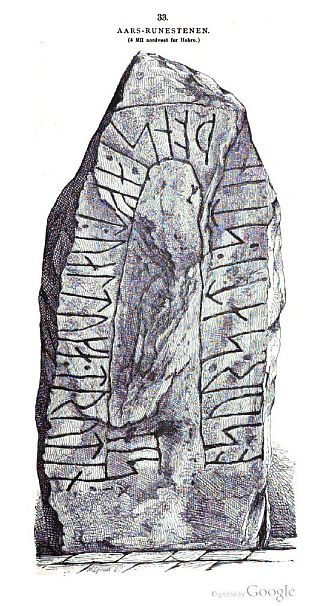
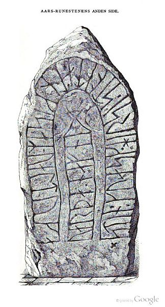
P. G. Thorsens Nachlass (Bezeichnet als: P. G. Thorsens optegnelser, tegninger m.m. vedrørende runer og runemindesmærker - überführt aus der Kopenhagener Universitätsbibliothek 1929 - Gemäß Ministerialschreiben vom 04.03.1929; früher benannt als Additamenta 612 kvart - findet sich in der Königlichen Bibliothek in Kopenhagen unter NKS 3296 (in mehreren einzelnen Pappschachteln). In der Schachtel Nr. 17 werden Originalzeichnungen von Magnus Petersen verwahrt, die dieser auf den 30.06.1870 datiert hat. Zu der Zeit stand der Stein noch im Waffenhaus.


Außerdem findet sich in seiner Hinterlassenschaft in der Schachtel 4 auch noch eine 3-seitige, handschriftliche Notiz von Thorsen. Das erste Blatt ist auf den 11. Juli 1838 datiert und zeigt eine Zeichnung der Seite B. Angemerkt hat Thorsen dazu - übersetzt: "Eine sehr detaillierte Zeichnung - eingesandt 1821." Unter der Zeichnung hat er den Eintrag aus Pontoppidans Werk "Marmora Danica selectiora. II" - siehe oben - wiedergegeben, der sich auf der Rückseite - hier 2. Blatt - fortsetzt. Die dritte Seite beinhaltet die erste zeichnerische Wiedergabe der Jahrhundertelang unentdeckten Seite A und ist auf den 22. August 1838 datiert, der Tag ihrer Entdeckung. Darunter hat er geschrieben - übersetzt: "Diese Inschrift war bis zu meiner Untersuchung noch unbekannt."
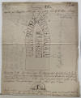 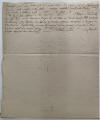 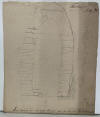


Prof. Ludv. F. A. Wimmer (*07.02.1839 - 29.04.1920, Philologe und Runenforscher - link-LIVES - Politiets registerblade - Bestattungsprotokoll)
Bildquelle:
Fotografie zw. 1877-1900 von Fotograf Hansen & Weller
-
Det Kgl. Biblioteks billedsamling - Lizenz:
Public Domain
schreibt über diesen Runenstein in seinem großformatigen Werk "De danske runemindesmærker undersøgte og tolkede af Ludv. F. A. Wimmer, De Historiske Runemindesmærker, I-2, 1895, Nr. 10, S. 101ff " - eigener Scan.
Er hat den Runenstein persönlich vor Ort am 7./8. August 1878 und nochmals am 19.07.1892 untersucht.
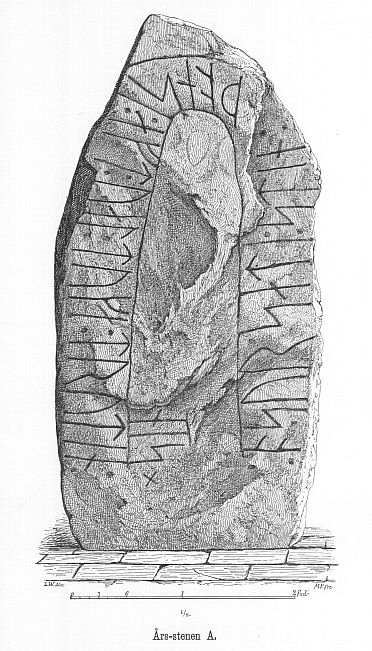
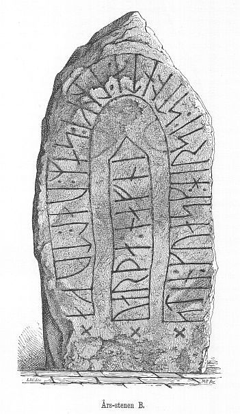
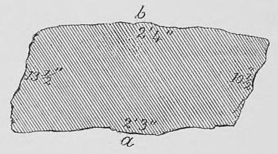
Ludv. F. A. Wimmer hat seine jahrelangen Aufzeichnungen der "Kgl. Bibliotek" in Kopenhagen überlassen. Ein Verzeichnis darüber wurde 1915 in Buchform herausgegeben - "Collectio runologica Wimmeriana: Fortegnelse over Ludv. F. A. Wimmers runologiske o. a. Samlinger i Det kgl. Bibliotek"
In seinen Unterlagen in der Bibliothek befinden sich unter "III - Originaltegninger af de danske Runemindesmærker, udførte paa Undersøgelsesrejserne af Magn. Petersen og kontrollerede paa Stedet af Ludv. Wimmer, samt Prøvetryk af de paa Grundlag af de nævnte Tegninger, Aftryk o. s. v. til De danske Runemindesmærker" udførte Afbildninger med Wimmers Rettelser" unter der Nummer 10 u.a. zwei Zeichnungen von Magnus Petersen, die die beiden Seiten wiedergeben und von ihm auf den 07.08.1878 datiert wurden.


Erik Moltke (*04.04.1901 - 19.10.1984, Runologe, Historiker - lilink-LIVES)
Bildquelle: Scan von Buchumschlag "Runerne i Danmark og ders
oprindelse" - Erik Moltke - 1976 - Lizenz:
CC-BY-SA
hat diese beiden Fotos am 12.05.1931 aufgenommen.
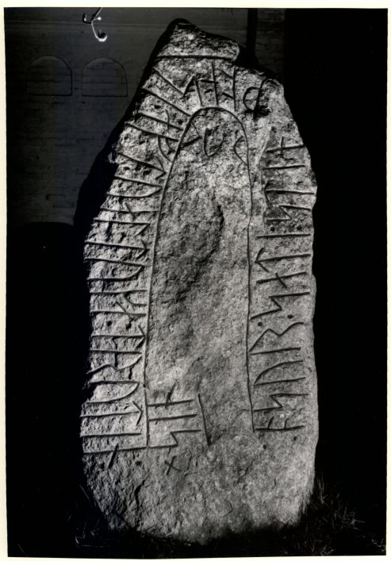
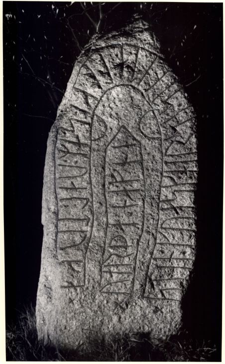
Der Digitalen Sammlung des Nationalmuseums Kopenhagen entlehnt (hier geht's zur Seite B) - Lizenz: CC-BY-SA
Im Vorfeld zu dem 2016 erschienenen Buch von Lisbeth M. Imer (*1973, Runologin am Nationalmuseum Kopenhagen) "Danmarks Runesten - en fortælling" reiste sie mit dem Fotografen Roberto Fortuna zur Bestandsaufnahme durch die Lande. Dieses Foto des Runensteins wurde bei dieser Tour am 20. März 2012 von Herrn Fortuna aufgenommen.
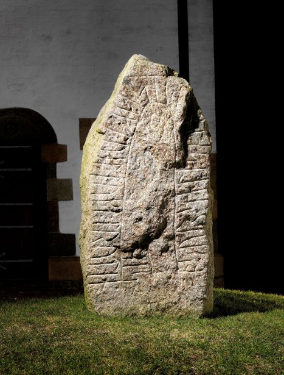
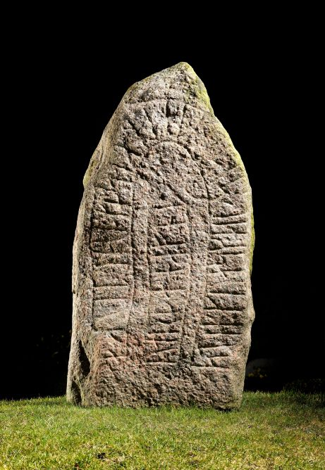
Der Digitalen Sammlung des Nationalmuseums Kopenhagen entlehnt (hier 2. Seite) - Lizenz: CC-BY-SA
Der Kirche und dem Runenstein in Års habe ich erstmals im Sommer 1988 - vor nunmehr 34 Jahren - einen Besuch abgestattet. Danach war ich nochmals am Dienstag, 21.08.1990, am Samstag, 10.08.1996, am Freitag, 23.08.2013 und nun im Rahmen meiner 2022er Jütland Wikingertour am Samstag, 04.06.2022, vor Ort. Dabei konnte ich diese digitalen Fotos fertigen.
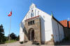 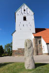 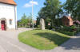 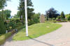 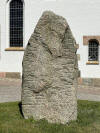 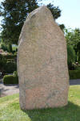 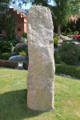 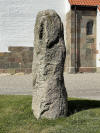 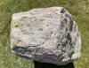


Bei meinem vorletzten Besuch in Års am Freitag, 23.08.2013 habe ich diese Fotos gemacht (vergrößerte Darstellung über Mausklick):
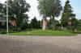 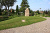 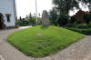 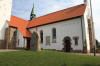 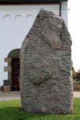 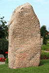


Der Eintrag in der dänischen Runendatenbank mit allen Informationen findet sich hier.
Die Informationen in "Fund og Fortidsminder" zu dem Runenstein finden sich hier. Darin ist inzwischen dieser Zustandsbericht des Steinrestaurators Leif Vognsen aus dem Jahr 2018 eingebettet.
Über diesen Link finden sich zu dem Runenstein Informationen des Forschungsprojektes "Runes" der Akademie der Wissenschaften zu Göttingen.
Über die Webseite von www.biopix-foto.de kann man zwei Fotos dieses Runensteins - Seite A - Seite B - mit rot nachgezeichneten Runen anschauen, was natürlich eine deutlich verbesserte Ansicht darstellt, auch wenn die Runen im Vergleich zu anderen Runensteinen - je nach Witterung/Sonneneinstrahlung - eigentlich gut lesbar sind.
Via Google StreetView kann man das Innere der Kirche von Års inzwischen jederzeit von zu Hause aus erkunden. Dabei sieht man auch links vom Eingang den Runenstein - Ansicht der Seite B - auf dem kleinen Hügel stehen.
28.03.2025 - Die Tage habe ich über eBay eine sw Postkarte mit der fotografischen Ansicht der B-Seite des Runensteins von Års erstanden. Es findet sich kein Hinweis auf den Fotograf und auch nicht zu dem Jahr der Herausgabe. Eine Anfrage dazu habe ich mal an das Lokalhistorisk Arkiv Aars gerichtet, die leider unbeantwortet blieb.
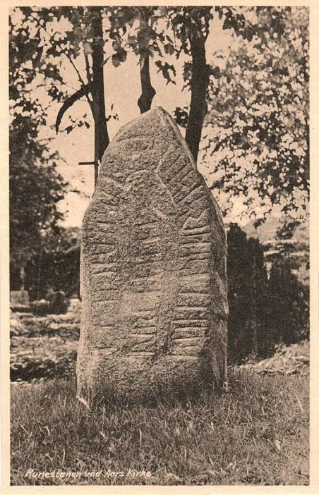
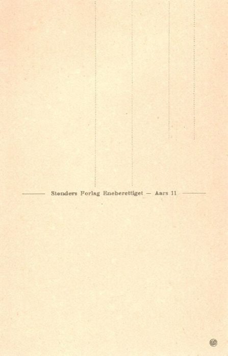
Ich schätze mal, dass die Ansichtskarte aus den 1930er Jahren stammt, worüber sie wohl frei von Urheberrrechten sein sollte - Lizenz: Public Domain - Die Karten wurde vom Stenders Forlag herausgegeben.